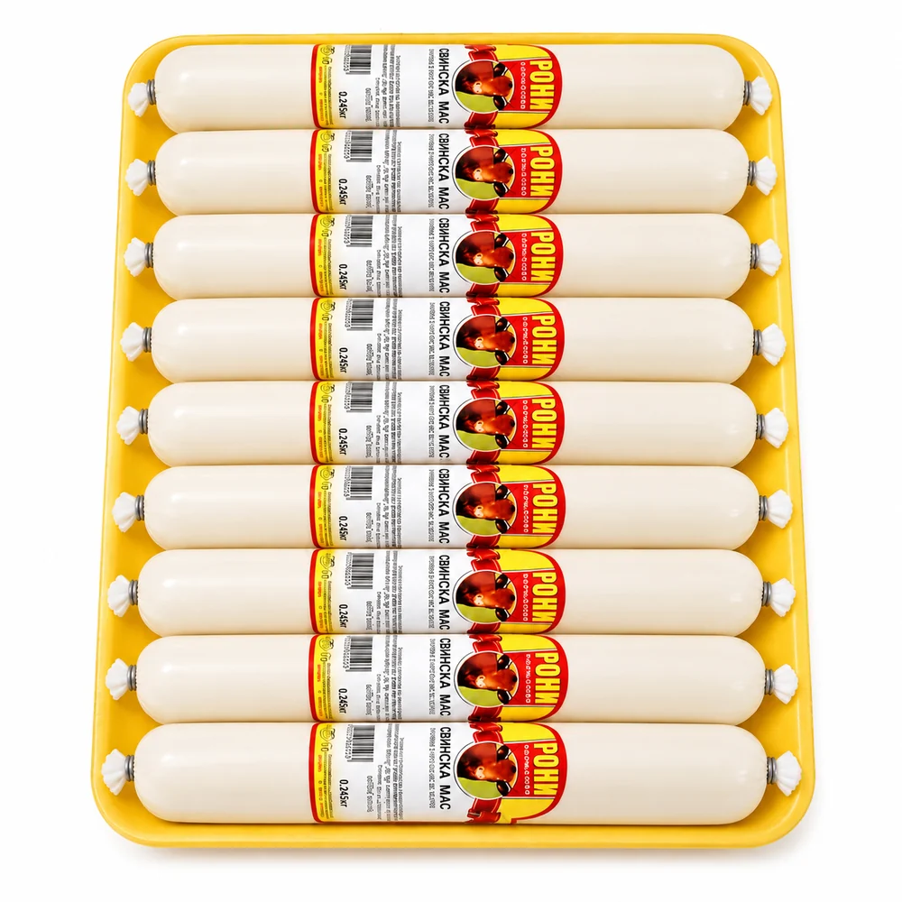
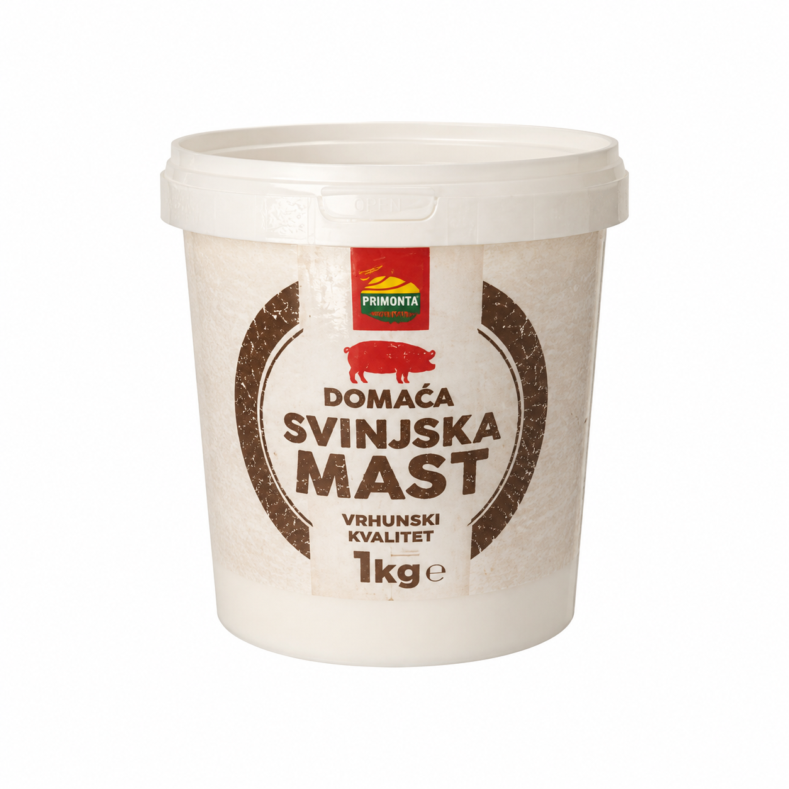

Domuz yağının insan sağlığı üzerindeki etkileri, geleneksel kullanım alanları ve modern tıptaki yeri hakkında detaylı bilgiler.

Domuz yağı, yüzyıllardır farklı kültürlerde çeşitli sağlık ve bakım amaçlarıyla kullanılmış doğal bir üründür. Geleneksel olarak cilt bakımında ve masaj uygulamalarında tercih edilmiştir. Bu sayfadaki bilgiler geleneksel kullanıma dayanır; tıbbi etki iddiası taşımaz.
Domuz yağı; linoleik asit, oleik asit ve palmitik asit gibi yağ asitleri içerir. Yoğun yapısı cilt yüzeyinde kalıcı bir tabaka bıraktığı için geleneksel olarak nemlendirici amaçla kullanılmıştır.
Bu makalede bahsedilen tüm faydalar harici kullanım (cilt üzerine uygulama) içindir. Domuz yağı kesinlikle gıda olarak tüketilmemelidir. Ürünlerimiz kozmetik amaçlı, harici kullanım içindir.
Domuz yağı, geleneksel olarak kuruyan ve yıpranan ciltlerin bakımında kullanılmıştır. Yoğun yapısı ciltte nem kaybını azaltmaya yardımcı olur; yüzeyde ince bir tabaka bırakarak kuruma ve çatlamaya karşı bariyer oluşturur. Açık yara ve yanık üzerine uygulanmaz.
İyileşmesi tamamlanmış, kapalı cilt bölgelerinin bakımında geleneksel olarak tercih edilmiştir. Cildi yumuşatır ve nem kaybını azaltmaya yardımcı olur. Yeni veya iyileşmemiş bir bölgeye uygulamayın; hekiminize danışın.
İz görünümünün bakımında geleneksel olarak tercih edilen bir üründür. Cildi yumuşatır ve nem kaybını azaltmaya yardımcı olur. Aktif sivilce, iltihaplı cilt veya tıbbi bir cilt rahatsızlığı varsa uygulanmamalı, dermatoloğa başvurulmalıdır.
Yoğun yapısı sayesinde ciltte nem kaybını azaltmaya yardımcı olur. Kuruluğa bağlı pürüzlü görünümün yumuşamasında geleneksel olarak tercih edilir. Göz çevresi gibi ince bölgelerde az miktar kullanın.
Masaj yağı olarak harici kullanıma uygundur. Ciltte kolay yayılır, kayganlık sağlar ve masaj sırasında sürtünmeyi azaltır. Eklem veya kas şikâyetiniz varsa bu ürünü tedavi amacıyla kullanmayın; hekiminize başvurun.
Masaj yağı olarak harici kullanıma uygundur. Ciltte kolay yayılır ve kayganlık sağlayarak masaj uygulamasını kolaylaştırır. Spor sonrası masajlarda geleneksel olarak tercih edilmiştir.
Kuruyan ve hassaslaşan ciltte geleneksel olarak yumuşatıcı amaçla kullanılmıştır. Sağlık şikâyetlerinizde bu ürünü tedavi amacıyla kullanmayın; hekiminize başvurun.
Domuz yağı bir ilaç değildir; hastalıkların teşhis, tedavi veya önlenmesinde kullanılmaz. Kozmetik amaçlı, harici kullanım içindir. Sağlık sorunlarınız için hekiminize başvurun.
Domuz yağı evcil hayvanlarda da geleneksel olarak tüy ve cilt bakımında kullanılmıştır. Hayvanınızda bir cilt rahatsızlığı varsa bu ürünü tedavi amacıyla kullanmayın; veteriner hekiminize başvurun.
Domuz yağı kullanımı oldukça basittir. Temiz cilt üzerine ince bir tabaka halinde uygulanır ve hafifçe masaj yapılarak emilmesi sağlanır. Kullanım sıklığı ve miktarı, uygulanan bölgeye göre değişiklik gösterir:
İlk kullanım öncesi küçük bir cilt bölgesinde test yapılması önerilir. Hassasiyet veya alerjik reaksiyon görülmesi durumunda kullanım durdurulmalı ve doktora danışılmalıdır.
Domuz yağının cilt üzerindeki etkilerine dair kapsamlı klinik çalışma bulunmamaktadır. Bu sayfada aktarılanlar bilimsel kanıt değil, geleneksel kullanım bilgisidir.
Domuz yağının cilt üzerindeki etkilerine dair kapsamlı ve sonuçlanmış klinik çalışma bulunmamaktadır. Bu sayfadaki bilgiler geleneksel kullanıma dayalı genel bilgilendirmedir.
Domuz yağı, yüzyıllardır çeşitli kültürlerde cilt bakımı amacıyla kullanılan geleneksel bir üründür. Bu sayfadaki bilgiler geleneksel kullanıma dair genel bilgilendirmedir ve tıbbi tavsiye yerine geçmez. Sağlık sorunlarınızda hekiminize başvurun.
%100 saf ve doğal domuz yağı ürünlerimiz, geleneksel yöntemlerle hazırlanmış olup katkı maddesi içermez. Doğru kullanıldığında cilt sağlığına önemli katkılar sağlayabilir.
%100 saf ve doğal. Tüm siparişlerde kargo bizden.
 Domuz Yağı 50 gr450 ₺
Domuz Yağı 50 gr450 ₺
 Domuz Yağı 115 gr700 ₺
Domuz Yağı 115 gr700 ₺

Domuz Yağı 250 gr1.500 ₺ Domuz Yağı 5'li Paket (5 × 115 gr)2.500 ₺
Domuz Yağı 5'li Paket (5 × 115 gr)2.500 ₺

Domuz Yağı 1 kg5.000 ₺Formu doldurun, WhatsApp'tan yazın ya da doğrudan arayın.